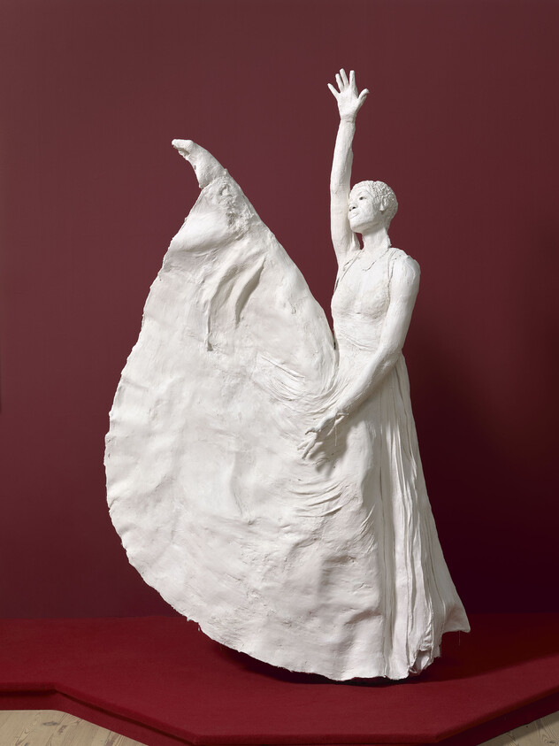
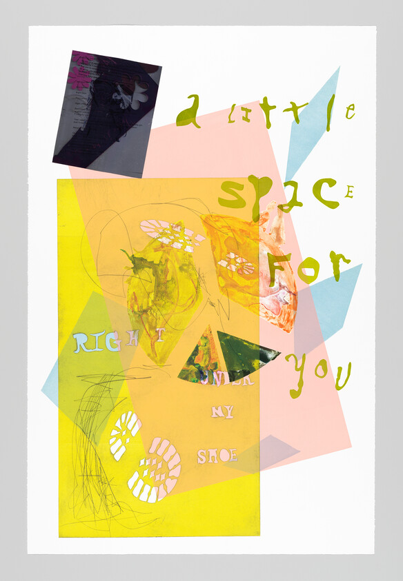
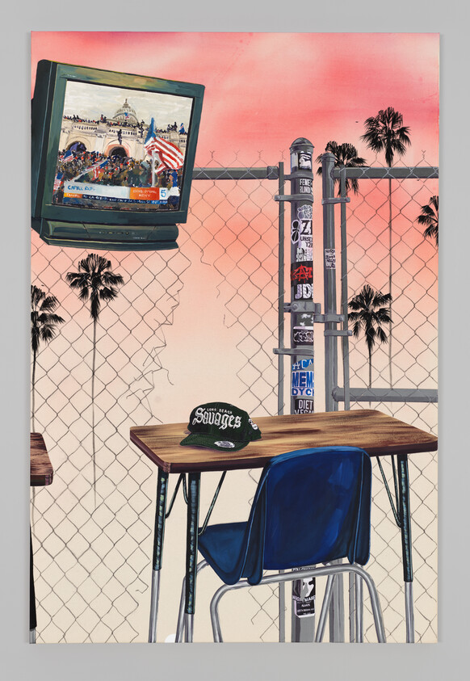
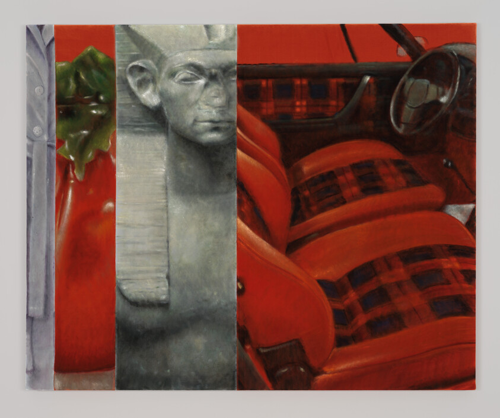

CSS FLOATS
GALLERY OF 8

Dear Mama, Karon Davis, 2024

A little space for you, Raque Ford, 2024

January 6th, Tidawhitney, 2024



Study for then again 2, Issy Wood, 2022

Dear Mama, Karon Davis, 2024

A little space for you, Raque Ford, 2024

January 6th, Tidawhitney, 2024

Study for then again 2, Issy Wood, 2022